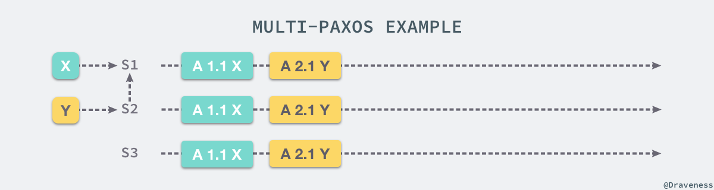

一致性
在分布式系统中，一致性(Consistency，早期也叫 Agreement)是指对于系统中的多个服务节点，给定一系列操作，在协议（往往通过某种共识算法）保障下，试图使得它们对处理结果达成某种程度的一致。
一致性并不代表结果正确与否，而是系统对外呈现的状态一致与否，例如，所有节点都达成失败状态也是一种一致。
分布式的挑战
在实际的计算机集群系统（看似强大的计算机系统，很多地方都比人类世界要脆弱的多）中，存在如下的问题：
- 节点之间的网络通讯是不可靠的，包括任意延迟和内容故障；
- 节点的处理可能是错误的，甚至节点自身随时可能宕机；
- 同步调用会让系统变得不具备可扩展性。
要解决这些挑战，愿意动脑筋的读者可能会很快想出一些不错的思路。为了简化理解，仍然以两个电影院一起卖票的例子。可能有如下的解决思路：
- 每次要卖一张票前打电话给另外一家电影院，确认下当前票数并没超售；
- 两家电影院提前约好，奇数小时内一家可以卖票，偶数小时内另外一家可以卖；
- 成立一个第三方的存票机构，票都放到他那里，每次卖票找他询问；
这些思路大致都是可行的。实际上，这些方法背后的思想，将可能引发不一致的并行操作进行串行化，就是现在计算机系统里处理分布式一致性问题的基础思路和唯一秘诀。只是因为计算机系统比较傻，需要考虑得更全面一些；而人们又希望计算机系统能工作的更快更稳定，所以算法需要设计得再精巧一些。
规范的说，理想的分布式系统一致性应该满足：
- 可终止性（Termination）：一致的结果在有限时间内能完成；
- 共识性（Consensus）：不同节点最终完成决策的结果应该相同；
- 合法性（Validity）：决策的结果必须是其它进程提出的提案。
第一点很容易理解，这是计算机系统可以被使用的前提。需要注意，在现实生活中这点并不是总能得到保障的，例如取款机有时候会是 服务中断 状态，电话有时候是 无法连通 的。
第二点看似容易，但是隐藏了一些潜在信息。算法考虑的是任意的情形，凡事一旦推广到任意情形，就往往有一些惊人的结果。例如现在就剩一张票了，中关村和西单的电影院也分别刚确认过这张票的存在，然后两个电影院同时来了一个顾客要买票，从各自观察看来，自己的顾客都是第一个到的……怎么能达成结果的共识呢？记住我们的唯一秘诀：核心在于需要把两件事情进行排序，而且这个顺序还得是大家都认可的。
第三点看似绕口，但是其实比较容易理解，即达成的结果必须是节点执行操作的结果。仍以卖票为例，如果两个影院各自卖出去一千张，那么达成的结果就是还剩八千张，决不能认为票售光了。
强一致性
线性一致性
线性一致性或称 原子一致性 或 严格一致性 指的是程序在执行的历史中在存在可线性化点P的执行模型，这意味着一个操作将在程序的调用和返回之间的某个点P起作用。这里“起作用”的意思是被系统中并发运行的所有其他线程所感知。要求如下：
- 写后读 这里写和读是两个操作，如果写操作在完成之后，读才开始，读要能读到最新的数据，而且保证以后也能读操作也都能读到这个最新的数据。
- 所有操作的时序与真实物理时间一致，要求即使不相关的两个操作，如果执行有先后顺序，线性一致性要求最终执行的结果也需要满足这个先后顺序。比如，操作序列(写A，读A，写B，读B)，那么不仅，读A，读B能读到最新A值和B值；而且要保证，如果读B读到最新值时，读A一定也能读到最新值，也就是需要保证执行时序与真实时序相同。
- 如果两个操作是并发的(比如读A没有结束时，写B开始了)，那么这个并发时序不确定，但从最终执行的结果来看，要确保所有线程(进程，节点)看到的执行序列是一致的。
顺序一致性
相比线性一致性，主要区别在于，对于物理上有先后顺序的操作，不保证这个时序。具体而言，对于单个线程，操作的顺序仍然要保留，对于多个线程(进程，节点)，执行的事件的先后顺序与物理时钟顺序不保证。但是要求，从执行结果来看，所有线程(进程，节点)看到的执行序列是一样的。
线性一致性和顺序一致性。

- 图1 是顺序一致性：从这两个进程的角度来看，顺序应该是这样的
write(y,2) -> read(x,0) -> write(x,4) -> read(y,2)，每个进程内部的读写顺序都是合理的，但是这个顺序与全局时钟下看到的顺序并不一样，write(x,4)先于read(x,0)执行，但是 read 却没有读到最新值。 - 图2 是线性一致性：每个读操作都读到了该变量的最新写的结果，同时 两个进程看到的操作顺序与全局时钟的顺序一样，都是
write(y,2) -> write(x,4) -> read(x,4) -> read(y,2)。 - 图3 不符合顺序一致性，更加不符合线性一致性，两个进程内部的顺序可能是：
write(x,4) -> read(y,0) -> write(y,2) -> read(x,0)、或者：write(y,2) -> read(x,0) -> write(x,4) -> read(y,0)显然两个顺序又不能同时被 P1、P2 满足，因此这个顺序是有冲突的，不满足顺序一致性。
因果一致性
因果一致性，被认为是比 顺序一致性 更弱的一致性，在因果一致性中，只对有因果关系的事件有顺序要求。

对于 P1 和 P2 的操作是没有先后关系的，因此谁先发生都是可以的。
- 从 P3 的视角来看，操作执行序列是
w(x,7) -> r(x,7) -> w(x,2) -> r(x,2) -> w(x,4) - 从 P4 的视角来看，操作执行序列是
w(x,2) -> w(x,4) -> r(x,4) -> w(x,7) -> r(x,7)
但是不同进程看到的执行序列不一样，所以不符合顺序一致性。
带约束的一致性
绝对理想的 强一致性（Strong Consistency） 代价很大。除非不发生任何故障，所有节点之间的通信无需任何时间，这个时候其实就等价于一台机器了。实际上，越强的一致性要求往往意味着越弱的性能、越低的可用性。
强一致的系统往往比较难实现。很多时候，人们发现实际需求并没有那么强，可以适当放宽一致性要求，降低系统实现的难度。例如在一定约束下实现所谓 最终一致性（Eventual Consistency），即总会存在一个时刻（而不是立刻），系统达到一致的状态，这对于大部分的 Web 系统来说已经足够了。这一类弱化的一致性，被笼统称为 弱一致性（Weak Consistency）。
最终一致性
最终一致性也被称为 乐观复制(optimistic replication)，用户只能读到某次更新后的值，但系统保证数据将最终达到完全一致的状态，只是所需时间不能保障。这个达成一致所需要的时间，我们称为 窗口时间。
我们常见的 异步复制的主从架构实现的是最终一致性 。它的一个典型常见是用户读取异步从库时，可能读取到较旧的信息，因为该从库尚未完全与主库同步。注意，同步复制的主从架构会出现任一节点宕机导致的单点问题。
共识算法
共识算法解决的是对某个提案（Proposal），大家达成一致意见的过程。提案的含义在分布式系统中十分宽泛，如多个事件发生的顺序、某个键对应的值、谁是领导……等等，可以认为任何需要达成一致的信息都是一个提案。
实践中，一致性的结果往往还需要客户端的特殊支持，典型地通过访问足够多个服务节点来验证确保获取共识后结果。
拜占庭问题
拜占庭将军问题描述了一个如下的场景，有一组将军分别指挥一部分军队，每一个将军都不知道其它将军是否是可靠的，也不知道其他将军传递的信息是否可靠，但是它们需要通过投票选择是否要进攻或者撤退。
在这时，无论将军是否可靠，只要所有的将军达成了统一的方案，选择进攻或者撤退其实就是没有任何问题的。上述的情况不会对当前的战局有太多的影响，也不会造成损失，但是如果其中的一个将军告诉其中一部分将军选择进攻、另一部分选择撤退，就会出现非常严重的问题了。
由于将军的队伍中出了一个叛徒或者信息在传递的过程中被拦截，会导致一部分将军会选择进攻，剩下的一部分会选择撤退，它们都认为自己的选择是大多数人的选择，这时就出现了严重的不一致问题。
拜占庭将军问题是对分布式系统容错的最高要求，然而这不是日常工作中使用的大多数分布式系统中会面对的问题，我们遇到更多的还是节点故障宕机或者不响应等情况，这就大大简化了系统对容错的要求。
问题挑战
实际上，如果分布式系统中各个节点都能保证以十分强大的性能（瞬间响应、高吞吐）无故障的运行，则实现共识过程并不复杂，简单通过多播过程投票即可。
很可惜的是，现实中这样完美的系统并不存在，如响应请求往往存在时延、网络会发生中断、节点会发生故障、甚至存在恶意节点故意要破坏系统。
一般地，把故障（不响应）的情况称为 非拜占庭错误 ，恶意响应的情况称为 拜占庭错误（对应节点为拜占庭节点）。
常见算法
针对非拜占庭错误的情况，一般包括 Paxos、Raft 及其变种。
对于要能容忍拜占庭错误的情况，一般包括 PBFT 系列、 PoW 系列算法等。从概率角度，PBFT 系列算法是确定的，一旦达成共识就不可逆转；而 PoW 系列算法则是不确定的，随着时间推移，被推翻的概率越来越小。
理论界限
搞学术的人都喜欢对问题先确定一个界限，那么，这个问题的最坏界限在哪里呢？很不幸，一般情况下，分布式系统的共识问题无解。
当节点之间的通信网络自身不可靠情况下，很显然，无法确保实现共识。但好在，一个设计得当的网络可以在大概率上实现可靠的通信。然而，即便在网络通信可靠情况下，一个可扩展的分布式系统的共识问题的下限是无解。
这个结论，被称为 FLP 不可能性 原理，可以看做分布式领域的“测不准原理”。
FLP
FLP 不可能定理是分布式系统领域最重要的定理之一，它给出了一个非常重要的结论：在网络可靠并且存在节点失效的异步模型系统中，不存在一个可以解决一致性问题的确定性算法。
这个定理其实也就是告诉我们不要浪费时间去为异步分布式系统设计在任意场景上都能够实现共识的算法，异步系统完全没有办法保证能在有限时间内达成一致。理解这一原理的一个不严谨的例子是：
三个人在不同房间，进行投票（投票结果是 0 或者 1）。三个人彼此可以通过电话进行沟通，但经常会有人时不时地睡着。比如某个时候，A 投票 0，B 投票 1，C 收到了两人的投票，然后 C 睡着了。A 和 B 则永远无法在有限时间内获知最终的结果。如果可以重新投票，则类似情形每次在取得结果前发生。
这岂不是意味着研究一致性问题压根没有意义吗？
先别这么悲观，学术界做研究，考虑的是数学和物理意义上最极端的情形，很多时候现实生活要美好的多。Paxos算法的场景比FLP的系统模型还要松散，除了异步通信，Paxos允许消息丢失（通信不健壮），但Paxos却被认为是最牛的一致性算法，其作者 Lamport 也获得2014年的图灵奖，这又是为什么？
其实仔细回忆Paxos论文会发现， Paxos 中存在活锁，理论上的活锁会导致 Paxos 算法无法满足 Termination 属性，也就不算一个正确的一致性算法。Lamport 在自己的论文中也提到 FLP结果表明，不存在完全满足一致性的异步算法... ，因此他建议通过 Leader 来代替 Paxos 中的 Proposer ，而 Leader 则通过随机或其他方式来选定（Paxos中假如随机过程会极大降低FLP发生的概率）。也就是说Paxos算法其实也不算理论上完全正确的，只是在工程实现中避免了一些理论上存在的问题。
科学告诉你什么是不可能的；工程则告诉你，付出一些代价，我可以把它变成可能。
一致性（Consistency）与共识（Consensus）
我们常说的 一致性（Consistency） 在分布式系统中指的是 副本（Replication） 问题中对于同一个数据的多个副本，其对外表现的数据一致性，如 线性一致性 、因果一致性、最终一致性等，都是用来描述副本问题中的一致性的。
而 共识（Consensus） 则不同，共识问题中所有的节点要最终达成共识，由于最终目标是所有节点都要达成一致，所以根本 不存在一致性强弱 之分。
只有当你使用像 Paxos 这样的共识算法作为解决副本问题的核心组件时，才会对外展现出不同的一致性级别。但是，即使是在这样的场景下，讨论一个共识算法的一致性也是不合适的，因为 整个副本系统最终的一致性并不单单取决于共识算法 ，Client 访问所遵循的规范也会有决定性的作用。比如说：即使副本系统使用 multi-paxos 在所有副本服务器上同步了日志序号，但如果 Client 被允许从非 Leader 节点获取数据，则整个副本系统仍然不是强一致的。
CAP
分布式计算系统不可能同时确保一致性（Consistency）、可用性（Availablity）和分区容忍性（Partition），设计中往往需要弱化对某个特性的保证。
- 一致性（Consistency - 线性一致性）：任何操作应该都是原子的，发生在后面的事件能看到前面事件发生导致的结果，注意这里指的是强一致性；
- 可用性（Availablity）：在有限时间内，任何非失败节点都能应答请求；
- 分区容忍性（Partition）：网络可能发生分区，即节点之间的通信不可保障。
比较直观地理解，当网络可能出现分区时候，系统是无法同时保证一致性和可用性的。要么，节点收到请求后因为没有得到其他人的确认就不应答，要么节点只能应答非一致的结果。
好在大部分时候网络被认为是可靠的，因此系统可以提供一致可靠的服务；当网络不可靠时，系统要么牺牲掉一致性（大部分时候都是如此），要么牺牲掉可用性。
既然 CAP 不可同时满足，则设计系统时候必然要弱化对某个特性的支持。
弱化一致性
对结果一致性不敏感的应用，可以允许在新版本上线后过一段时间才更新成功，期间不保证一致性。例如网站静态页面内容、实时性较弱的查询类数据库等，CouchDB、Cassandra 等为此设计。
弱化可用性
对结果一致性很敏感的应用，例如银行取款机，当系统故障时候会拒绝服务。MongoDB、Redis 等为此设计。Paxos、Raft 等算法，主要处理这种情况。
弱化分区容忍性
现实中，网络分区出现概率减小，但较难避免。某些关系型数据库、ZooKeeper 即为此设计。实践中，网络通过双通道等机制增强可靠性，达到高稳定的网络通信。
Paxos
Paxos 其实是一类能够解决分布式一致性问题的协议，它能够让分布式网络中的节点在出现错误时仍然保持一致；Leslie Lamport 提出的 Paxos 可以在没有恶意节点的前提下保证系统中节点的一致性，也是第一个被证明完备的共识算法，目前的完备的共识算法包括 Raft 本质上都是 Paxos 的变种。
Basic Paxos
Basic Paxos 是 Paxos 中最为基础的协议，每一个 Basic Paxos 的协议实例最终都会选择唯一一个结果；使用 Paxos 作为共识算法的分布式系统中，节点都会有三种身份，分别是 Proposer、Acceptor 和 Learner。
Paxos 的运行过程分为两个阶段，分别是准备阶段（Prepare）和接受阶段（Accept），当 Proposer 接收到来自客户端的请求时，就会进入如下流程：

在整个共识算法运行的过程中，Proposer 负责提出提案并向 Acceptor 分别发出两次 RPC 请求，Prepare 和 Accept；Acceptor 会根据其持有的信息 minProposal、acceptedProposal 和 acceptedValue 选择接受或者拒绝当前的提案，当某一个提案被过半数的 Acceptor 接受之后，我们就认为当前提案被整个集群接受了。
Multi-Paxos
由于大多数的分布式集群都需要接受一系列的值，如果使用 Basic Paxos 来处理数据流，那么就会导致非常明显的性能损失，而 Multi-Paxos 是前者的加强版，如果集群中的 Leader 是非常稳定的，那么我们往往不需要准备阶段的工作，这样就能够将 RPC 的数量减少一半。

上述图片中描述的就是稳定阶段 Multi-Paxos 的处理过程，S1 是整个集群的 Leader，当其他的服务器接收到来自客户端的请求时，都会将请求转发给 Leader 进行处理。
当然，Leader 角色的出现自然会带来另一个问题，也就是 Leader 究竟应该如何选举，在 Paxos Made Simple 一文中并没有给出 Multi-Paxos 的具体实现方法和细节，所以不同 Multi-Paxos 的实现上总有各种各样细微的差别。
Raft
Raft 其实就是 Multi-Paxos 的一个变种，Raft 通过简化 Multi-Paxos 的模型，实现了一种更容易让人理解的共识算法，它们两者都能够对一系列连续的问题达成一致。
Raft 在 Multi-Paxos 的基础之上做了两个限制，首先是 Raft 中追加日志的操作必须是连续的，而 Multi-Paxos 中追加日志的操作是并发的，但是对于节点内部的状态机来说两者都是有序的，第二就是 Raft 对 Leader 选举的条件做了限制，只有拥有最新、最全日志的节点才能够当选 Leader，但是 Multi-Paxos 由于任意节点都可以写日志，所以在选择 Leader 上也没有什么限制，只是在选择 Leader 之后需要将 Leader 中的日志补全。
在 Raft 中，所有 Follower 的日志都是 Leader 的子集，而 Multi-Paxos 中的日志并不会做这个保证，由于 Raft 对日志追加的方式和选举过程进行了限制，所以在实现上会更加容易和简单。
从理论上来讲，支持并发日志追加的 Paxos 会比 Raft 有更优秀的性能，不过其理解和实现上还是比较复杂的，很多人都会说 Paxos 是科学，而 Raft 是工程，当作者需要去实现一个共识算法，会选择使用 Raft 和更简洁的实现，避免因为一些边界条件而带来的复杂问题。
Raft协议将一致性协议的核心内容分拆成为几个关键阶段，以简化流程，提高协议的可理解性。
Leader election
Raft协议的每个副本都会处于三种状态之一：
- Leader：所有请求的处理者，Leader副本接受client的更新请求，本地处理后再同步至多个其他副本
- Follower：请求的被动更新者，从Leader接受更新请求，然后写入本地日志文件
- Candidate：如果 Follower 副本在一段时间内没有收到 Leader 副本的心跳，则判断 Leader 可能已经故障，此时启动选主过程，此时副本会变成 Candidate 状态，直到选主结束。
时间被分为很多连续的随机长度的 term ， term 有唯一的 id，每个 term 最多只有一个 Leader 。每个 term 一开始就进行选主：
- Follower 将自己维护的
current_term_id加 1。 - 然后将自己的状态转成
Candidate - 发送
RequestVoteRPC消息(带上current_term_id) 给 其它所有 Server
本轮选举成功，当收到了 majority 的投票后，状态切成 Leader ，并且定期给其它的所有 Server 发心跳消息（不带 Log 的 AppendEntriesRPC ）以告诉对方自己是 current_term_id 所标识的 term 的 Leader 。term id 作为Logical clock，在每个 RPC 消息中都会带上，用于检测过期的消息。
- 当一个 Server 收到的 RPC 消息中的
rpc_term_id比本地的current_term_id更大时，就更新current_term_id为rpc_term_id，并且如果当前 state 为 Leader 或者 candidate 时，将自己的状态切成 follower。 - 当
rpc_term_id比本地的current_term_id更小，则拒绝这个RPC消息。
本轮选举失败，则没有任何一个 candidate 收到了 majority 的 vote 时，没有 Leader 被选出。这种情况下，每个 candidate 等待的投票的过程就超时了，接着 candidates 都会将本地的 current_term_id 再加1，再等待 150ms ~ 300ms 之后随机发起 RequestVoteRPC 进行新一轮的 Leader election，以避免再次选主失败。
Log Replication
当 Leader 被选出来后，就可以接受客户端发来的请求了，每个请求包含一条需要被 replicated state machines 执行的命令。 Leader 会把它作为一个 Log Entry append 到日志中，然后给其它的 Server 发 AppendEntriesRPC 请求。当 Leader 确定一个 Log Entry 被 safely replicated 了（大多数副本已经将该命令写入日志当中），就 apply 这条 Log Entry 到状态机中然后返回结果给客户端。如果某个 Follower 宕机了或者运行的很慢，或者网络丢包了，则会一直给这个 Follower 发 AppendEntriesRPC 直到日志一致。
当一条日志是 commited 时，Leader 才可以将它应用到状态机中。Raft 保证一条 commited 的 Log Entry 已经持久化了并且会被所有的节点执行。当一个新的 Leader 被选出来时，它的日志和其它的 Follower 的日志可能不一样，这个时候，就需要一个机制来保证日志的一致性。
因此，需要有一种机制来让 Leader 和 Follower 对 Log 达成一致， Leader 会为每个 Follower 维护一个 nextIndex ，表示 Leader 给各个 Follower 发送的下一条 Log Entry 在 Log 中的 index ，初始化为 Leader 的最后一条 Log Entry 的下一个位置。leader 给 Follower 发送 AppendEntriesRPC 消息，带着 (term_id, nextIndex-1)， term_id 即 nextIndex-1 这个槽位的 Log Entry 的term_id ，Follower 接收到 AppendEntriesRPC 后，会从自己的 Log 中找是不是存在这样的 Log Entry，如果不存在，就给 Leader 回复拒绝消息，然后 Leader 则将 nextIndex 减1，再重复，直到 AppendEntriesRPC 消息被接收。
Safety
Raft 保证被选为新 Leader 的节点拥有所有已提交的 Log Entry。这个保证是在 RequestVoteRPC 阶段做的，candidate 在发送 RequestVoteRPC 时，会带上自己的最后一条日志记录的 term_id,index ，其他节点收到消息时，如果发现自己的日志比 RPC 请求中携带的更新，拒绝投票。日志比较的原则是，如果本地的最后一条 Log Entry 的 term id 更大，则更新，如果 term id 一样大，则 index 更大的更大。
Log Compaction
在实际的系统中，不能让日志无限增长，否则系统重启时需要花很长的时间进行回放，从而影响 availability 。Raft 采用对整个系统进行 snapshot 来处理， snapshot 之前的日志都可以丢弃。Snapshot 技术在 Chubby 和 ZooKeeper 系统中都有采用。
Raft使用的方案是：每个副本独立的对自己的系统状态进行 Snapshot ，并且只能对已经提交的日志记录（已经应用到状态机）进行snapshot。
POW
无论是 Paxos 还是 Raft 其实都只能解决非拜占庭将军容错的一致性问题，不能够应对分布式网络中出现的极端情况，但是这在传统的分布式系统都不是什么问题，无论是分布式数据库还是消息队列集群，它们内部的节点并不会故意的发送错误信息，在类似系统中，最常见的问题就是节点失去响应或者失效，所以它们在这种前提下是有效可行的，也是充分的。
工作量证明（POW，Proof-of-Work） 是一个用于阻止拒绝服务攻击和类似垃圾邮件等服务错误问题的协议，它在 1993 年被 Cynthia Dwork 和 Moni Naor 提出，它能够帮助分布式系统达到拜占庭容错。
工作量证明的关键特点就是，分布式系统中的请求服务的节点必须解决一个一般难度但是可行（feasible）的问题，但是验证问题答案的过程对于服务提供者来说却非常容易，也就是一个不容易解答但是容易验证的问题。
工作量证明的原理其实非常简单，比特币网络选择的谜题非常好的适应了工作量证明定义中的问题，比较难以寻找同时又易于证明，我们可以简单理解为工作量证明防止错误或者无效请求的原理就是增加客户端请求服务的工作量，而适合难度的谜题又能够保证合法的请求不会受到影响。
由于工作量证明需要消耗大量的算力，同时比特币大约 10min 才会产生一个区块，区块的大小也只有 1MB，仅仅能够包含 3、4000 笔交易，平均下来每秒只能够处理 5~7（个位数）笔交易，所以比特币网络的拥堵状况非常严重。
可靠性指标
很多领域一般都喜欢谈服务可靠性，用几个 9 来说事。这几个 9 其实是粗略代表了概率意义上系统能提供服务的可靠性指标，最初是电信领域提出的概念。
下表给出不同指标下，每年允许服务出现不可用时间的参考值。
| 指标 | 概率可靠性 | 每年允许不可用时间 | 典型场景 |
|---|---|---|---|
| 一个九 | 90% | 1.2 个月 | 不可用 |
| 二个九 | 99% | 3.6 天 | 普通单点 |
| 三个九 | 99.9% | 8.6 小时 | 普通企业 |
| 四个九 | 99.99% | 51.6 分钟 | 高可用 |
| 五个九 | 99.999% | 5 分钟 | 电信级 |
| 六个九 | 99.9999% | 31 秒 | 极高要求 |
| 七个九 | 99.99999% | 3 秒 | N/A |
| 八个九 | 99.999999% | 0.3 秒 | N/A |
| 九个九 | 99.9999999% | 30 毫秒 | N/A |
一般来说，单点的服务器系统至少应能满足两个九；普通企业信息系统三个九就肯定足够了（大家可以统计下自己企业内因系统维护每年要停多少时间），系统能达到四个九已经是业界领先水平了（参考 AWS）。电信级的应用一般号称能达到五个九，这已经很厉害了，一年里面最多允许五分钟的服务停用。
那么，该如何提升可靠性呢？有两个思路：一是让系统中的单点变得更可靠；二是消灭单点。然而，依靠单点实现的可靠性毕竟是有限的，要想进一步的提升，那就只好消灭单点，通过主从、多活等模式让多个节点集体完成原先单点的工作。这可以从概率意义上改善服务的可靠性，也是分布式系统的一个重要用途。